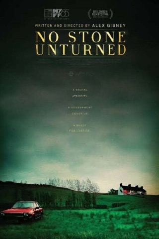

About the film

In 1994, six men were gunned down and five wounded in a pub while watching a World Cup soccer match in Loughinisland, Northern Ireland. With a police investigation that was perfunctory at best, the case remained unsolved. In this non-fiction murder mystery, Academy Award-winning documentarian Alex Gibney (TAXI TO THE DARK SIDE, ENRON: THE SMARTEST GUYS IN THE ROOM, GOING CLEAR: SCIENTOLOGY AND THE PRISON OF BELIEF) reopens the original case to investigate why no culprit was ever brought to justice.
At the festival
- 2017 Centerpiece · DC Premiere · Friday, October 20, 2017 · 8:30 PM · The Naval Heritage CenterPost-screening discussion to follow with Alex Gibney and Mark Mazzetti, Washington investigations editor, The New York Times.